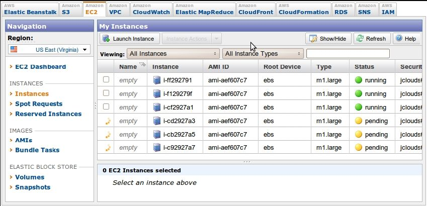

Apache的HBase是用来做大事的，就像射钉枪。你不应该用HBase来记录公司的销售清单，就像你不会用射钉枪来造玩具屋一样。如果你的数据不是用多少 GB 来衡量，那么你可能需要一个小点的工具。
HBase 初看起来很像关系数据库，如果你不知道更多的信息，你可能认为它就是一个关系数据库。当学习HBase时，最有挑战性的任务不是技术，而是HBase中用到的许多词语，我们似乎很熟悉，但却具有欺骗性，并不是原来的含义。例如，HBase 将数据存放在桶（bucket）中，它称为表，其中包含单元（cell），单元是行和列的交叉处。到目前为止很好，是吗？
错了！在HBase中，表的行为不像关系，行不像记录，列是完全可变的（没有受到模式描述的强制限制）。模式的设计仍然重要，因为它告知了系统的性能特点，但它不会替你保持房间的整洁。HBase是RDBMS的邪恶孪生兄弟，逆反超人。
那么，你为什么要用这个数据库？除了伸缩性之外，还有一些其他理由。首先，HBase有一些内置的特性，其他数据库没有，诸如版本管理、压缩、垃圾回收（对于超期的数据），以及内存表。直接提供这些特性意味着，如果你用到它们，就可以少写代码。HBase 也提供了很强的一致性保证，容易实现从关系数据库的迁移。
由于这些原因，HBase 很出色地成为在线分析处理系统的基石。虽然与其他数据库相比，单个操作可能要慢一些，但Hbase擅长做的事情是扫描巨大的数据集。所以，对于真正巨大的查询，HBase通常胜过其他数据库。这也解释了为什么HBase常用于大公司，作为后台日志和查询系统。
HBase是面向列的数据库，在一致性和伸缩性方面引以为傲。它基于BigTable的思想。BigTable是Google开发的高性能专有数据库，在 2006年的白皮书“Bigtable: A Distributed Storage System for Structured Data”中介绍过1。HBase最初是为处理自然语言而创建的，开始是作为Apache Hadoop的一个贡献包。从此之后，它成为一个顶级Apache项目。
注释1 http://labs.google.com/papers/bigtable.html
在架构方面，HBase 的设计初衷是能够容错。对于单个机器，硬件故障可能不常见，但对于大型集群，节点故障是常态。通过预写式日志（write-ahead logging）和分布式配置， HBase能够快速地从单个服务器故障中恢复。
另外，HBase所处的生态系统也带来了额外的好处。HBase基于Hadoop，Hadoop是一个坚固的、可伸缩的计算平台，提供了分布式文件系统和mapreduce的计算能力。在有HBase的地方，就有Hadoop和其他基础设施组件，你可以在自己的应用中加以利用。
一些知名度很高的公司在积极地使用和开发 HBase，以解决它们的“大数据”问题。例如，Facebook在2010年11月宣布了新的消息基础设施，选择了HBase作为其主要组件。Stumbleupon几年以来一直采用Hbase来实现实时数据存储和分析，直接通过HBase提供各种网站特征。Twitter大量采用HBase，从数据生成（针对找人这样的应用）到保存监控/性能数据。使用HBase的公司还包括eBay、Meetup、Ning、Yahoo等。
在这些支持下，HBase 的新版本发布的速度很快。在编写本书时，当前的稳定版是0.90.3，也就是我们采用的版本。现在下载HBase，我们就要开始了。
今天的目标是学习使用HBase的基本特性。我们会让一个HBase本地实例以单机模式运行，然后通过HBase shell来创建和改变表，利用基本命令来插入、修改数据。之后，我们将探讨如何在 JRuby中利用HBase的 Java API，通过编程的方式来执行其中一些操作。在这个过程中，我们将介绍HBase的一些架构概念，如表中的行、列族（column family）、列和值之间的关系等。
完全可运营的、产品级的HBase集群，实际上至少应该有5个节点，常规经验是这样的。这样的配置对我们的需求来说是杀鸡用牛刀了。幸运的是，HBase支持3种运行模式：
●单机模式是单台机器独立运行；
●伪分布式模式是单个节点伪装一个集群；
●完全分布式模式是一群节点一起工作。
在本章的大部分时间，我们采用单机模式运行 HBase。即使这样也有一点挑战性，所以我们虽然不会全面介绍安装和管理，但会在合适的时候，给出一些相关的故障诊断提示。
在使用 HBase 之前，必须先配置它。HBase 的配置设置保存在一个文件中，名为hbase-site.xml，在${HBASE_HOME}/conf/目录下。请注意，HBASE_HOME是一个环境变量，指向HBase的安装目录。
初始情况下，这个文件只包含一个空的<configuration>标签。可以采用下面的格式，在配置文件中添加任意多个属性定义：
<property>
<name>some.property.name</name>
<value>A property value</value>
</property>
所有可用属性的完整清单，以及默认值及其描述信息，都在文件 hbase- default.xml中，位于${HBASE_ HOME}/src/main/resources目录下。
默认情况下，HBase 用一个临时目录来存放它的数据文件。这意味着每当操作系统决定回收这些磁盘空间时，你的所有数据都会丢失。
要保存数据，应该指定一个稳定的存储位置。可以设置hbase.rootdir属性，指向一个合适的路径，像这样：
<property>
<name>hbase.rootdir</name>
<value>file:///path/to/hbase</value>
</property>
要启动HBase，打开一个终端窗口（命令行提示），并执行下面的命令：
${HBASE_HOME}/bin/start-hbase.sh
要关闭HBase，使用同一目录下的stop-hbase.sh命令。
如果出了状况，请在${HBASE_ HOME}/logs目录下，查看最近修改的文件。在*nix系统中，下面的命令将最近的日志数据原封不动地输出到控制台：
cd ${HBASE_HOME}
find ./logs -name "hbase-*.log" -exec tail -f {} \;
HBase shell是基于 JRuby的命令行程序，可以用它与HBase交互。在 shell中，可以添加和删除表，改变表的模式，添加或删除数据，并完成一些其他任务。后面会探讨连接HBase的其他方式，但现在用shell就够了。当HBase运行时，打开一个终端，并启动HBase的shell：
${HBASE_HOME}/bin/hbase shell
要确认它工作正常，请查询它的版本信息。
hbase> version
0.90.3, r1100350, Sat May 7 13:31:12 PDT 2011
任何时候都可以输入help，查看可用命令的清单，或某个命令的用法。
接下来，执行status命令，查看HBase服务器的状态。
hbase> status
1 servers, 0 dead, 2.0000 average load
如果这些命令出现任何问题，或shell挂起，可能是连接出了问题。HBase尽了最大努力，根据网络设置来自动配置它的服务，但有时候它也会出错。如果看到这些症状，请查看4.2.3小节中的“HBase的网络设置”。
映射表是一个键值对，就像Rubu中的哈希，或Java中的hashmap。HBase中的表基本上是一个很大的映射表，更准确地说，它是嵌套许多映射表的映射表。
HBase的网络设置
默认情况下，HBase 试图向外部客户提供它的服务，但在例子中，只需要在同一台机器上发起连接。所以，在 hbase-site.xml 中加入下列部分或全部属性，也许会有帮助（你的用处可能不一样）。请注意，仅当你打算进行本地连接，而非远程连接时，下面表中的这些值才有帮助。
这些属性告诉 HBase，如何为主服务器和区域服务器（稍后将讨论它们）建立连接，以及zookeeper配置服务。设置为“lo”的属性指的是所谓的loopback（回送）网卡。在*nix系统中，回送网卡不是真实的网卡（与以太网或无线网卡不同），而是只有软件模拟的网卡，让计算机连接它自己。bindAddress 属性告诉 HBase，它尝试监听哪个IP地址。
在HBase表中，键可以是任意字符串，每个键都映射到一行数据。行本身也是一个映射表，其中的键称为列，而值就是未解释的字节数组。列按照列族（column family）进行分组，所以列的完全名称包含两个部分：列族名称和列限定符（column qualifier）。通常它们用一个冒号连接起来（例如，'family:qualifier'）。
为了展示这些概念，请看图4-1。

图4-1 HBase的表包含行、键、列族、列和值
在这张图中，有一张假想的表，它有两个列族：color和shape。该表有两行（虚线框表示），由行键来唯一标识：first和second。请看第一行，我们看到它在列族color中有3列（限定符分别是red、blue和yellow），在列族shape中有1列（square）。行键和列名（包括列族和限定符）的组合，形成了定位数据的地址。在这个例子中，三元组first/color:red指向了值'#F00'。
现在，让我们利用所学的表结构知识，做点有趣的事情：我们要做一个wiki！
我们可能希望为 wiki 加上很多生动的信息，但我们会先从最基本的部分开始。一个wiki包含了一些页面，每个页面都有一个唯一的标题字符串，并包含一些文本内容。
执行create命令来创建wiki表：
hbase> create 'wiki', 'text'
0 row(s) in 1.2160 seconds
这里创建了一个名为wiki的表，只有一个名为text的列族。表目前是空的，它没有行，因此也没有列。不像关系数据库，HBase 的列是针对它所属的行的。如果添加行，同时就会添加列来保存数据。
将表体系结构画出来，就得到了图4-2。按惯例，我们预期每行在text列族中只有一列，限定符是空字串（' ）。所以，包含一页文本的完整列名是'text:'。
当然，wiki表要有用，就需要有内容。让我们来添加一些数据！
图4-2 wiki表有一个列族
wiki需要有一个首页，所以从这里开始。在HBase的表中添加数据，使用put命令：
hbase> put 'wiki', 'Home', 'text:', 'Welcome to the wiki!'
这个命令在wiki表中插入一行，键是'Home'，将'Welcome to the wiki!'加入到'text:'列中。
可以用get来查询'Home'行的数据，它需要两个参数：表名和行键。可以选择性地指定要返回哪些列。
hbase> get 'wiki', 'Home', 'text:'
COLUMN CELL
text: timestamp=1295774833226, value=Welcome to the wiki!
1 row(s) in 0.0590 seconds
请注意输出中的 timestamp（时间戳）字段。HBase 为所有数据值保存一个整数时间戳，表示自某个时间（1970年1月 1日00:00:00 UTC）以来的毫秒数。如果把新的值写入同一个单元，老的值将留在附近，按它的时间戳索引。这是非常出色的特征。大部分数据库要求你自己专门处理历史数据，但在HBase中，版本管理已经内置支持了！
Put和Get
put和get命令可以明确指定时间戳。如果你不想使用自某个时间以来的毫秒数，也可以指定另一个选择的整数值。这让你在需要时可以在时间维上工作。如果你不指定时间戳， HBase会在插入时使用当前的时间，在读取时返回最近的版本。
如果要看一个公司如何选择覆写时间戳字段的例子，请参见 4.2.5 节的案例研究“Facebook的消息索引表”。本章剩下的部分将采用默认的时间解释。
到目前为止，wiki的模式包含的页面带有标题和文本，以及整数的版本历史，此外没有其他东西。让我们进一步扩展需求，包含以下内容：
●在wiki中，页面由标题唯一确定；
●页面可以有无数个新版本；
●新版本由它的时间戳确定；
●新版本包含文本，以及可选的提交说明；
●新版本由一个作者提交，作者由名字唯一确定。
我们的需求可以画成草图，如图4-3所示。在这个页面需求的抽象表示中，我们看到每个新版本都有一个作者，一段提交说明，一些内容文本和一个时间戳。页面的标题不是新版本的一部分，因为它是标识符，所以用它来说明这些新版本属于同一个页面。
将理念映射到HBase表，需要采取有点不同的方式，如图4-4所示。wiki表使用标题作为行键，将其他页面数据分在两个列族中，分别是test和revision。列族text和以前一样，我们希望每行都只有一列，限定符是空串（''），来保存文章的内容。列族revision的任务是保存新版本特有的其他数据，如作者和提交说明。
图4-3 wiki页面的需求（包含时间维度）
图4-4 更新的wiki表结构（时间维度没显示）
案例研究：Facebook的消息索引表
Facebook采用HBase作为其消息基础设施的主要组件，用于存放消息数据，也为查询而维护倒排索引（inverted index）。
在它的索引表模式中：
●行键是用户ID；
●列限定符是出现在用户消息中的单词；
●时间戳是包含这个单词的消息的ID。
因为用户之间的消息是不可修改的，所以消息的索引条目也是静态的。版本管理的概念没有意义。
对于Facebook，让时间戳匹配消息ID，这让它们有了另一个维度来存储数据。
1．默认值
因为在创建wiki表时没有带特殊选项，所以全部采用了HBase的默认值。因为其中有一个默认值，即列数据只保存3个版本，所以调高这个值。更新的wiki表结构如图4-4所示。如果要改动模式，必须先用disable命令，让表离线。
hbase> disable 'wiki'
0 row(s) in 1.0930 seconds
现在可以用alter命令，修改列族的属性。
hbase> alter 'wiki', { NAME => 'text', VERSIONS =>
hbase* org.apache.hadoop.hbase.HConstants::ALL_VERSIONS }
0 row(s) in 0.0430 seconds
这里，我们告诉HBase修改text列族的VERSIONS属性。还有一些其他属性可以设置，第2天将讨论其中的一部分。hbase*这一行表示，这是前一行的续行。
2．修改表
修改列族属性的操作可能开销很大，因为HBase必须用选定的规格创建新的列族，然后复制所有的数据。在生产系统中，这可能导致相当长的停机时间。出于这个原因，事先设置列族属性是较好的做法。
在wiki表仍然禁用的情况下，添加revision列族，还是使用alter命令：
hbase> alter 'wiki', { NAME => 'revision', VERSIONS =>
hbase* org.apache.hadoop.hbase.HConstants::ALL_VERSIONS }
0 row(s) in 0.0660 seconds
像之前的text列族一样，只是在表模式中添加了一个revision列族，而不是个别列。虽然我们希望每行最终都包含revision:author和revision:comment，但这依赖于客户来实现这个希望，它没有写进正式的模式中。如果有人想在页面中加入revision:foo，HBase也不会阻止这种做法。
3．继续
添加列族之后，重新启用wiki：
hbase> enable 'wiki'
0 row(s) in 0.0550 seconds
现在wiki表已经修改好了，可以支持扩展的需求清单，可以开始向revision列族的列中添加数据。
我们看到，HBase的shell对于操纵表这样的任务是很好用的。遗憾的是，shell对数据插入的支持不是最好的。put命令一次只允许设置一个列值，而在刚才更新过的shcema中，需要同时添加多个列值，这样它们就有相同的时间戳。我们需要开始编写脚本。
下面的脚本可以直接在HBase的shell中执行，因为shell也是一个JRuby解释器。在执行时，它为主（Home）页添加新版本的文本（text），同时设置了作者（author）和说明（comment）字段。JRuby运行在Java虚拟机（JVM）上，所以它能访问HBase的Java代码。这些例子在非JVM的Ruby上是不能执行的。
hbase/put_multiple_columns.rb
import 'org.apache.hadoop.hbase.client.HTable'
import 'org.apache.hadoop.hbase.client.Put'
def jbytes( *args )
args.map { |arg| arg.to_s.to_java_bytes }
end
table = HTable.new( @hbase.configuration, "wiki" )
p = Put.new( *jbytes( "Home" ) )
p.add( *jbytes( "text", "", "Hello world" ) )
p.add( *jbytes( "revision", "author", "jimbo" ) )
p.add( *jbytes( "revision", "comment", "my first edit" ) )
table.put( p )
以import开头的两行将用到的HBase类引入到shell。这让我们以后不用写出完整的名称空间。接下来，jbytes()函数接受任意数量的参数，返回一个转换好的Java字节数组，这是HBase的API方法要求的。
然后，创建了一个本地变量（table），指向wiki表，使用@hbase管理对象的配置信息。
然后，我们准备提交操作，即创建并准备一个新的Put实例，它记下要修改的行。在这个例子中，我们的关注点一直在处理的主页。最后，利用add()向Put实例添加属性，然后调用table对象来执行准备好的put操作。方法add()有几种形式，在例子中，使用了3个参数的版本：add（列族，列限定符，值）。
为什么要多个列族
在构造整个结构时，你可能不想用多个列族，为什么不把一行的所有数据都放在一个列族中呢？这个解决方案实现起来更简单。但不使用多个列族也有不好的一面，即丧失了细粒度性能调优的机会。每个列族的性能选项是独立配置的。这些设置影响到读和写的速度，以及磁盘空间的占用。
HBase 中的所有操作在行级是原子的。对于读或写的行，不论影响到多少列，该操作都会有一致的视图。这种设计决定有助于客户对数据做出聪明的推断。
因为put操作影响到多个列，并且没有指定时间戳，所以所有的列值都会有同样的时间戳（以毫秒表示的当前时间）。让我们调用get来验证一下。
hbase> get 'wiki', 'Home'
COLUMN CELL
revision:author timestamp=1296462042029, value=jimbo
revision:comment timestamp=1296462042029, value=my first edit
text: timestamp=1296462042029, value=Hello world
3 row(s) in 0.0300 seconds
你可以看到，上面列出的每个列值都有相同的时间戳。
今天，我们亲自查看了运行的HBase服务器。我们学习了如何配置它，以及查看日志文件来诊断故障。利用HBase shell，我们完成了基本管理和数据操作任务。
在对wiki系统的建模中，我们探索了HBase中的模式设计。我们学习了如何创建表和操作列族。设计HBase的模式意味着决定列族的一些选项，同样重要的是，我们对行键和时间戳这样的特性的语义解释。
我们也开始接触HBase Java API，在 shell中执行 JRuby代码。在第 2天，我们将更进一步，利用shell来执行定制的脚本，完成数据导入这样的大任务。
你应该已经开始摆脱关系数据库的一些概念负担了，如表、行和列。HBase 使用这些术语的方式与它们在其他系统中的含义有差别，当我们深入研究 HBase 的特性时，这种差别会更突出。
第1天作业
HBase在线文档一般有两种风格：极其技术化和不存在。这种情况正在改变，“getting started”（初学指南）开始出现了，但要准备好花些时间，在Javadoc或源代码中寻找答案。
求索
1．弄清楚如何通过shell完成下面的工作：
●删除一行中个别列的值；
●删除一整行。
2．在书签中加入你用的HBase版本的API文档。
实践
1．创建一个函数put_many()，它创建一个Put实例，在其中添加一些列-值对，并提交给一个表。函数的签名应该像这样：
def put_many( table_name, row, column_values )
# 这里是你的代码
End
2．将put_many()函数粘贴到HBase的shell中，即定义它，并像这样调用它：
hbase> put_many 'wiki', 'Some title', {
hbase* "text:" => "Some article text",
hbase* "revision:author" => "jschmoe",
hbase* "revision:comment" => "no comment" }
第1天创建了表并进行了操作，现在要开始向wiki表添加一些正式的数据。今天，我们将针对HBase API编写脚本，最终将维基百科（Wikipedia）的内容加入到wiki中！在这个过程中，我们将利用一些性能方面的技巧，让导入工作更快完成。最后，我们将研究HBase的内部构造，看看它如何将数据分区，从而实现性能提升和灾难恢复。
在试用新的数据库系统时，人们常常会遇到一个问题，即如何迁移数据。像第1天所做的那样，用静态字符串手动完成Put操作，这是不错的方法，但我们可以做得更好。
幸运的是，将命令粘贴到shell中并不是执行命令的唯一方法。在从命令行启动HBase shell时，可以指定要执行的JRuby脚本名。HBase将执行该脚本，就像在shell中直接输入一样。语法是这样的：
${HBASE_HOME}/bin/hbase shell <your_script> [<optional_arguments> ...]
既然我们对“大数据”特别感兴趣，那就让我们创建脚本，将维基百科的文章导入wiki表。WikiMedia基金会监管Wikipedia、Wictionary和其他项目，并定期发布数据转储，我们可以使用这些数据转储。这些数据转储是巨大的XML文件。这里是英文维基百科的示例记录：
<page>
<title>Anarchism</title>
<id>12</id>
<revision>
<id>408067712</id>
<timestamp>2011-01-15T19:28:25Z</timestamp>
<contributor>
<username>RepublicanJacobite</username>
<id>5223685</id>
</contributor>
<comment>Undid revision 408057615 by [[Special:Contributions...</comment>
<text xml:space="preserve">{{Redirect|Anarchist|the fictional character|
...
[[bat-smg:Anarkėzmos]]
[[zh:□□□□]]</text>
</revision>
</page>
因为我们很明智，所以这里包含的所有信息都已体现在模式中：标题（行键）、文本、时间戳和作者。因此，我们应该能够写一个脚本来导入各个版本的数据，这不是很麻烦。
要事优先。需要以流的（SAX）方式，解析巨大的 XML 文件，我们就从这里开始。在JRuby中逐条解析XML文件的工作，看起来基本上是这样的：
hbase/basic_xml_parsing.rb
import 'javax.xml.stream.XMLStreamConstants'
factory = javax.xml.stream.XMLInputFactory.newInstance
reader = factory.createXMLStreamReader(java.lang.System.in)
while reader.has_next
type = reader.next
if type == XMLStreamConstants::START_ELEMENT
tag = reader.local_name
# do something with tag
elsif type == XMLStreamConstants::CHARACTERS
text = reader.text
# do something with text
elsif type == XMLStreamConstants::END_ELEMENT
# same as START_ELEMENT
end
end
分解一下，有几点值得一提。首先，生成了一个 XMLStreamReader ，并将它与java.lang. System.in联系在一起，这意味着它将从标准输入读取数据。
接下来，设置了一个while循环，它不断从XML流中取出符号，直到取完为止。在这个while循环内部，处理当前的符号。该符号可以是XML的开始标签、结束标签，或标签之间的文本，这决定了要做的事。
现在，我们可以将这个基本的XML处理框架，和前面探讨的HTable和Put接口结合起来。下面是得到的脚本。大部分代码应该看起来很熟悉，我们将讨论几个新增部分。
hbase/import_from_wikipedia.rb
require 'time'
import 'org.apache.hadoop.hbase.client.HTable'
import 'org.apache.hadoop.hbase.client.Put'
import 'javax.xml.stream.XMLStreamConstants'
def jbytes( *args )
args.map { |arg| arg.to_s.to_java_bytes }
end
factory = javax.xml.stream.XMLInputFactory.newInstance
reader = factory.createXMLStreamReader(java.lang.System.in)
① document = nil
buffer = nil
count = 0
table = HTable.new( @hbase.configuration, 'wiki' )
② table.setAutoFlush( false )
while reader.has_next
type = reader.next
③ if type == XMLStreamConstants::START_ELEMENT
case reader.local_name
when 'page' then document = {}
when /title|timestamp|username|comment|text/ then buffer = []
end
④ elsif type == XMLStreamConstants::CHARACTERS
buffer << reader.text unless buffer.nil?
⑤ elsif type == XMLStreamConstants::END_ELEMENT
case reader.local_name
when /title|timestamp|username|comment|text/
document[reader.local_name] = buffer.join
when 'revision'
key = document['title'].to_java_bytes
ts = ( Time.parse document['timestamp'] ).to_i
p = Put.new( key, ts )
p.add( *jbytes( "text", "", document['text'] ) )
p.add( *jbytes( "revision", "author", document['username'] ) )
p.add( *jbytes( "revision", "comment", document['comment'] ) )
table.put( p )
count += 1
table.flushCommits() if count % 10 == 0
if count % 500 == 0
puts "#{count} records inserted (#{document['title']})"
end
end
end
end
table.flushCommits()
exit
① 要指出的第1处不同是引入了几个变量。
●document：存放当前文章和新版本数据。
●buffer：存放文档中当前字段的字符数据（text、title、author等）。
●count：追踪我们已经导入了多少文章。
② 特别要注意table.setAutoFlush（false）的使用。在HBase 中，数据自动定期刷新到磁盘。这对于大多数应用是适用的。该脚本禁用了autoflush，所有put操作都会在缓存中执行，直到我们调用table.flushCommits()。这让我们能够在方便的时候，批量地写入和执行。
③ 接下来，我们看看解析时发生了什么。如果开始标签是<page>，那么将document重置成一个空的哈希表。否则，如果我们关注的是其他标签，重置 buffer 来存放它的文本。
④ 处理字符数据的方法，是将它追加到buffer中。
⑤ 对于大多数结束标签，只是将缓冲的内容放到 document 中。但如果结束标签是</revision>，将会创建一个新的Put实例，填入document的字段，并提交给表。之后，如果有一段时间没有调用 flushCommits()，就调用它，并向标准输出（put）报告进度。
我们差不多准备好执行这段脚本了，只是还要先做一点清扫工作。列族text将包含大块的文本内容，采用某种压缩会有好处。可以启用压缩和快速查找：
hbase> alter 'wiki', {NAME=>'text', COMPRESSION=>'GZ', BLOOMFILTER=>'ROW'}
0 row(s) in 0.0510 seconds
HBase支持两种压缩算法：Gzip（GZ）和Lempel-Ziv-Oberhumer（LZO）。HBase社区更推荐使用LZO，这只是一面之辞，但这里要采用GZ。
LZO的问题在于实现的许可证。虽然开源，但它不兼容Apache的许可证规则，所以LZO不能与HBase捆绑。在线文档有安装和配置LZO支持的详细说明。如果你希望高性能压缩，可以采用LZO。
Bloom过滤器是一个很酷的数据结构，它有效地回答了一个问题：我之前见过它吗？Bloom过滤器最初是由Burton Howard Bloom在 1970年开发的，用于拼写检查，它在数据存储应用中也变得很流行，用于快速确定键是否已存在。如果你不熟悉Bloom过滤器，4.3.5小节有简单的解释，说明了Bloom过滤器的工作原理。
HBase支持使用Bloom过滤器，来确定对于某个行键，是否存在某列（BLOOMFILTER=>'ROWCOL'），或者只是确定某个行键是否存在（BLOOMFILTER=>'ROW'）。列族中列的数量以及行的数量，都是没有限制的。Bloom 过滤器提供了一种快速方法，用于确定数据是否存在，同时避免费时的磁盘读取。
现在我们已经准备好执行这段脚本了。因为前面曾提到这些文件非常大，所以下载和解压缩无疑要花许多时间。那么我们要怎么做？
幸运的是，利用*nix管道的魔力，可以一步完成下载、解压缩，并将XML提供给这段脚本。命令如下：
curl <dump_url> | bzcat | \
${HBASE_HOME}/bin/hbase shell import_from_wikipedia.rb
Bloom过滤器是什么原理
我们不深入实现细节，Bloom 过滤器管理一个大小不变的比特数组，初始设置为 0。每次向过滤器提交一段新数据时，某些比特就翻转为 1。对这段数据进行哈希，将哈希值变成一组比特的位置，从而决定哪些比特翻转为1。
之后，为了测试过滤器是否过去遇到过特定的一段数据，过滤器会算出哪些比特应该是1，并检查这些比特。如果某个比特是0，那么过滤器就可以毫不含糊地说没遇到过。如果所有的比特都是 1，那么它报告说遇到过。很可能它以前遇到过这段数据，但随着遇到的数据越来越多，误报的可能性也越来越大。
使用Bloom过滤器而不用简单的哈希，是一种折中。哈希不会误报，但存放数据所需的空间是无限的。Bloom 过滤器使用了固定大小的空间，但偶尔会误报，根据饱和程度，误报率是可预测的。
请注意，应该将<dump_url>替换为 WikiMedia 基金会的转储文件的 URL1。应该用[project]-latest-pages-articles.xml.bz2文件，项目可以是英文Wikipedia（约6GB）2或英文Wikitionary（约185MB）3。这些文件包含了Main名称空间中所有最新的页面版本。也就是说，它们略去了用户页面、讨论页面等。
注释1 http://dumps.wikimedia.org
注释2 http://dumps.wikimedia.org/enwiki/latest/enwiki-latest-pages-articles.xml.bz2
注释3 http://dumps.wikimedia.org/enwiktionary/latest/enwiktionary-latest-pages-articles.xml.bz2
填入URL并执行它！你应该看到这样的输出（最后）：
500 records inserted (Ashmore and Cartier Islands)
1000 records inserted (Annealing)
1500 records inserted (Ajanta Caves)
只要你愿意，它会很欢乐地执行下去，直到遇到错误。但运行一会儿，你可能希望停止它。如果你打算停止这段脚本，按Ctrl+C快捷键。但现在让它保持运行，这样我们就能揭开引擎盖，学习HBase如何实现它的横向伸缩性。
在HBase中，行是按照行键排序的。区域（region）是一组行，由它的起始键（包含）和终止键（排除）来确定。区域不会重叠，每个区域都会指派给集群中一个特定的区域服务器。在简化的独立服务器中，只有一个区域服务器，它将负责所有的区域。完全分布式的集群会包含多个区域服务器。
所以，让我们来看看HBase服务器的硬盘使用情况，这会让我们明白数据的分布情况。要检查 HBase 的磁盘使用情况，可以打开一个命令提示符，转到前面指定的hbase.rootdir目录下，执行du命令。du是标准的*nix命令行工具，递归地告诉你一个目录及其子目录使用了多少磁盘空间。选项-h告诉du用易读的方式来报告数字。
下面是大约插入 12 000页之后，导入还在进行时，du命令给出的结果：
$ du -h
231M ./.logs/localhost.localdomain,38556,1300092965081
231M ./.logs
4.0K ./.META./1028785192/info
12K ./.META./1028785192/.oldlogs
28K ./.META./1028785192
32K ./.META.
12K ./-ROOT-/70236052/info
12K ./-ROOT-/70236052/.oldlogs
36K ./-ROOT-/70236052
40K ./-ROOT-
72M ./wiki/517496fecabb7d16af7573fc37257905/text
1.7M ./wiki/517496fecabb7d16af7573fc37257905/revision
61M ./wiki/517496fecabb7d16af7573fc37257905/.tmp
12K ./wiki/517496fecabb7d16af7573fc37257905/.oldlogs
134M ./wiki/517496fecabb7d16af7573fc37257905
134M ./wiki
4.0K ./.oldlogs
365M .
这个输出告诉我们很多关于HBase磁盘使用量和分配情况的信息。以/wiki开头的行描述了wiki表的磁盘使用。长名称的子目录517496fecabb7d16af7573fc37257905代表了单个区域（目前为止唯一的区域）。在它下面，/text和/revision目录分别对应text和revision列族。最后一行汇总了这些值，告诉我们HBase使用了365M磁盘空间。
还有一件事值得注意。输出的头两行（以./logs开头）告诉我们预写式日志（Write- Ahead Log，WAL）文件使用的空间。HBase利用预写式日志防止节点故障。这是相当典型的灾难恢复技术。例如，文件系统中的预写式日志称为journaling，在编辑操作（改写和增加）持久到磁盘之前，日志先附加到WAL。
出于性能考虑，编辑操作不需要马上写入磁盘。如果I/O先进行缓冲，随后批量写入磁盘，系统的性能会好很多。在这段状态不定的时间里，如果负责受影响区域的区域服务器崩溃了，HBase将利用WAL来确定哪些操作已成功，并采取纠正操作。
写入WAL是可选项，默认是启用的。像Put和Increment这样的编辑类有一个setter方法，名为setWriteToWAL()，可以用它来排除写入WAL的操作。一般情况下，需要保持默认选项，但在某些情况下，改变它是有意义的。例如，如果在执行一项可以随时重新执行导入任务的，就像Wikipedia导入脚本一样，那么你可能希望禁用WAL写入，牺牲灾难恢复的保护，来换取性能提升。
如果让这段脚本执行的时间足够长，就会看到HBase将该表分成了多个区域。下面是在添加了约 150 000页之后，du输出：
$ du -h
40K ./.logs/localhost.localdomain,55922,1300094776865
44K ./.logs
24K ./.META./1028785192/info
4.0K ./.META./1028785192/recovered.edits
4.0K ./.META./1028785192/.tmp
12K ./.META./1028785192/.oldlogs
56K ./.META./1028785192
60K ./.META.
4.0K ./.corrupt
12K ./-ROOT-/70236052/info
4.0K ./-ROOT-/70236052/recovered.edits
4.0K ./-ROOT-/70236052/.tmp
12K ./-ROOT-/70236052/.oldlogs
44K ./-ROOT-/70236052
48K ./-ROOT-
138M ./wiki/0a25ac7e5d0be211b9e890e83e24e458/text
5.8M ./wiki/0a25ac7e5d0be211b9e890e83e24e458/revision
4.0K ./wiki/0a25ac7e5d0be211b9e890e83e24e458/.tmp
144M ./wiki/0a25ac7e5d0be211b9e890e83e24e458
149M ./wiki/15be59b7dfd6e71af9b828fed280ce8a/text
6.5M ./wiki/15be59b7dfd6e71af9b828fed280ce8a/revision
4.0K ./wiki/15be59b7dfd6e71af9b828fed280ce8a/.tmp
155M ./wiki/15be59b7dfd6e71af9b828fed280ce8a
145M ./wiki/0ef3903982fd9478e09d8f17b7a5f987/text
6.3M ./wiki/0ef3903982fd9478e09d8f17b7a5f987/revision
4.0K ./wiki/0ef3903982fd9478e09d8f17b7a5f987/.tmp
151M ./wiki/0ef3903982fd9478e09d8f17b7a5f987
135M ./wiki/a79c0f6896c005711cf6a4448775a33b/text
6.0M ./wiki/a79c0f6896c005711cf6a4448775a33b/revision
4.0K ./wiki/a79c0f6896c005711cf6a4448775a33b/.tmp
141M ./wiki/a79c0f6896c005711cf6a4448775a33b
591M ./wiki
4.0K ./.oldlogs
591M .
最大的改变是老的区域（517496fecabb7d16af7573fc37257905）不见了，代之以4个新的区域。在独立服务器中，所有的区域都是由单个服务器提供服务，但在分布式环境下，它们会分包到不同的区域服务器。
这提出了几个问题，如“区域服务器如何知道它们负责为哪些区域提供服务？”以及“你怎样发现哪个区域（以及哪个区域服务器）提供哪一行？”
如果回到HBase shell，就可以查询.META.表，了解关于目前区域的更多情况。.META.是一个特殊的表，它的唯一目的就是追踪所有的用户表，以及哪个区域服务器负责为这些表的各个区域服务。
hbase> scan '.META.', { COLUMNS => [ 'info:server', 'info:regioninfo' ] }
即使区域的数目很少，你也会看到大量输出。这里是输出片段，为增加可读性，进行了格式化和截断处理。
ROW
wiki,,1300099733696.a79c0f6896c005711cf6a4448775a33b.
COLUMN+CELL
column=info:server, timestamp=1300333136393, value=localhost.localdomain:3555
column=info:regioninfo, timestamp=1300099734090, value=REGION => {
NAME => 'wiki,,1300099733696.a79c0f6896c005711cf6a4448775a33b.',
STARTKEY => '',
ENDKEY => 'Demographics of Macedonia',
ENCODED => a79c0f6896c005711cf6a4448775a33b,
TABLE => {{...}}
ROW
wiki,Demographics of Macedonia,1300099733696.0a25ac7e5d0be211b9e890e83e24e458.
COLUMN+CELL
column=info:server, timestamp=1300333136402, value=localhost.localdomain:35552
column=info:regioninfo, timestamp=1300099734011, value=REGION => {
NAME => 'wiki,Demographics of Macedonia,1300099733696.0a25...e458.',
STARTKEY => 'Demographics of Macedonia',
ENDKEY => 'June 30',
ENCODED => 0a25ac7e5d0be211b9e890e83e24e458,
TABLE => {{...}}
上面列出的两个区域都由同一个服务器提供服务， localhost.local- domain:35552。第一个区域从空字符串行（''）开始，到'Demographics of Macedonia'结束。第二个区域从'Demographics of Macedonia'开始，到'June 30'。
STARTKEY是包含在内的，而ENDKEY是排除在外的。所以，如果查询'Demographics of Macedonia'这一行，会发现它在第 2区域中。
因为行是按顺序保存的，所以可以利用保存在.META中的信息，来查找某一行应该在哪个区域和服务器。但.META.表保存在哪里呢？
我们发现.META.表分割为多个区域，由区域服务器提供服务，就像其他的表一样。要找到哪个服务器提供.META.表的哪一部分，就要扫描-ROOT-。
hbase> scan '-ROOT-', { COLUMNS => [ 'info:server', 'info:regioninfo' ] }
ROW
.META.,,1
COLUMN+CELL
column=info:server, timestamp=1300333135782, value=localhost.localdomain:35552
column=info:regioninfo, timestamp=1300092965825, value=REGION => {
NAME => '.META.,,1',
STARTKEY => '',
ENDKEY => '',
ENCODED => 1028785192,
TABLE => {{...}}
将区域分配给区域服务器，包括分析.META.区域的工作，都是由主节点来处理的，该节点通常称为HBaseMaster。主服务器也可以是一个区域服务器，同时执行两项任务。
如果一台区域服务器失效，主服务器会介入，重新分配原来属于失效节点的那些区域。这些区域的新服务器会查看WAL，看看是否需要执行恢复步骤。如果主服务器失效，它的职责将顺延到其他可以成为主服务器的区域服务器。
假定你已停止了运行导入的脚本，我们可以转到下一项任务：从导入的wiki内容中提取信息。
我的表模式在哪里
表模式信息从regioninfo扫描的示例输出中删除了。这减少了混乱，我们稍后将讨论性能调优选项。如果你很想看到表模式的定义，请使用describe命令。下面是例子：
hbase> describe 'wiki'
hbase> describe '.META.'
hbase> describe '-ROOT-'
wiki的文法包含许多链接，一些链接到内部的其他文章，一些链接到外部资源。这些内部链接包含了大量的拓扑数据。让我们把它们找出来！
我们的目标是找出文章间的直接链接关系，指向另一篇文章或从另一篇文章得到链接。在wiki文本中，内部链接是这样的：[[<target name>|<alt text>]]，其中<target name>是要链接的文章，<alt text>是待显示的替代文本（可选）。
例如，如果关于《星球大战》的文章包含字符串"[[Yoda|jedi master]]"，我们希望保存该关系两次：一次是《星球大战》的链出，另一次是 Yoda 的链入。保存该关系两次意味着，寻找一个页面的链入和链出都会很快。
为了保存这种附加的链接数据，要创建一个新表。进入shell并输入下面的命令：
hbase> create 'links', {
NAME => 'to', VERSIONS => 1, BLOOMFILTER => 'ROWCOL'
},{
NAME => 'from', VERSIONS => 1, BLOOMFILTER => 'ROWCOL'
}
在原则上，可以选择将链接数据硬挤到原有的列族中，或者在wiki表中添加一两个列族，而不是创建一个新表。创建独立的表有一个好处，它会有独立的区域。这意味着在需要的时候，集群可以更有效地分割区域。
根据HBase社区对列族给出的一般建议，每个表的列族数目应保持较小。可以将更多的列放到同一个列族中，也可以完全将列族放到不同的表中。这种选择很大程度上取决于客户是否经常需要取得整行数据（而不是只需要几列的值）。
在我们wiki的例子中，需要让text和revision列族放在同一个表里，这样我们在加入新版本时，元数据和文本的时间戳是一样的。但链接数据不一样，它不会与包含它的文章具有相同的时间戳。而且，大多数客户的动作要么对文章内容感兴趣，要到对抽取的文章链接信息感兴趣，不大可能同时对两者感兴趣。所以，将to和from列族放到独立的表中是有意义的。
创建了links表之后，就可以编写一段脚本，扫描wiki表的所有行。然后，针对每一行，取出wiki的文本，解析出链接。最后，针对每个找到的链接，在links表中创建链入和链出记录。这段脚本的大分部对你来说应该相当熟悉。大部分内容是重复的，我们将讨论几个新的部分。
hbase/generate_wiki_links.rb
import 'org.apache.hadoop.hbase.client.HTable'
import 'org.apache.hadoop.hbase.client.Put'
import 'org.apache.hadoop.hbase.client.Scan'
import 'org.apache.hadoop.hbase.util.Bytes'
def jbytes( *args )
return args.map { |arg| arg.to_s.to_java_bytes }
end
wiki_table = HTable.new( @hbase.configuration, 'wiki' )
links_table = HTable.new( @hbase.configuration, 'links' )
links_table.setAutoFlush( false )
① scanner = wiki_table.getScanner( Scan.new )
linkpattern = /\[\[([^\[\]\|\:\#][^\[\]\|:]*)(?:\|([^\[\]\|]+))?\]\]/
count = 0
while (result = scanner.next())
② title = Bytes.toString( result.getRow())
text = Bytes.toString( result.getValue( *jbytes( 'text', '' ) ) )
if text
put_to = nil
③ text.scan(linkpattern)do |target,label|
unless put_to
put_to = Put.new( *jbytes( title ) )
put_to.setWriteToWAL( false )
end
target.strip!
target.capitalize!
label = '' unless label
label.strip!
put_to.add( *jbytes( "to", target, label ) )
put_from = Put.new( *jbytes( target ) )
put_from.add( *jbytes( "from", title, label ) )
put_from.setWriteToWAL( false )
④ links_table.put( put_from )
end
⑤ links_table.put( put_to )if put_to
links_table.flushCommits()
end
count += 1
puts "#{count} pages processed (#{title})" if count % 500 == 0
end
links_table.flushCommits()
exit
① 首先，取得一个Scan对象，将用它来扫描wiki表。
② 提取行和列的数据需要某种字节转换，但通常这也不太困难。
③ 每次页面文本中出现 linkpattern 时，我们提取出目标文章和链接的文本，然后将这些值加入到Put实例中。
④ 最后，让表执行累计的Put操作。
⑤ 有可能（尽管可能性不大）一篇文章不包含任何链接，所以要用if put_to子句。
对这些Put操作采用setWriteToWAL（false）的设置是基于一种判断。因为这个练习是为了学习，而且如果出了什么问题，只要重新运行这个脚本，所以我们希望速度快一些，接受节点可能失效的风险。
如果你准备无视警告，义无反顾，那就执行这段脚本。
${HBASE_HOME}/bin/hbase shell generate_wiki_links.rb
它应该输出以下内容：
500 pages processed (10 petametres)
1000 pages processed (1259)
1500 pages processed (1471 BC)
2000 pages processed (1683)
...
像前面的脚本一样，可以让它爱运行多久就运行多久，甚至运行完。如果你想停止，就按CTRL+C快捷键。
可以像前面那样，用 du 监控该脚本的磁盘使用情况。你会看到新的项，代表刚创建的links表，随着脚本的运行，大小计数会增加。
我们刚才以编程方式创建了一个扫描器（scanner），以执行一项复杂的任务。接下来要用shell的scan命令，简单地将表的部分内容转储到控制台。
针对脚本在text: blob中找到的每个链接，它将一视同仁地在links表中创建to和from项。要查看这类创建的链接，可以转到shell中，扫描该表。
hbase> scan 'links', STARTROW => "Admiral Ackbar", ENDROW => "It's a Trap!"
你应该看到许多输出。当然，可以用get命令来看某篇文章的链接。
hbase> get 'links', 'Star Wars'
COLUMN CELL
...
links:from:Admiral Ackbar timestamp=1300415922636, value=
links:from:Adventure timestamp=1300415927098, value=
links:from:Alamogordo, New Mexico timestamp=1300415953549, value=
links:to:"weird al" yankovic timestamp=1300419602350, value=
links:to:20th century fox timestamp=1300419602350, value=
links:to:3-d film timestamp=1300419602350, value=
links:to:Aayla secura timestamp=1300419602350, value=
...
Joe问道：
我们不能用mapreduce完成这项任务吗？
4.1节解释了对应例子将采用（J）Ruby和 Java Script。JRuby与Hadoop相处得不是太好，但如果你想用 Java 来实现 mapreduce，应该将这段扫描程序写成一个 mapreduce任务，将它发给Hadoop。
一般来说，像这样的任务最适合用 mapreduce 来实现。有一些规则格式的输入，由映射程序处理（扫描一个HBase表），还有一些输出操作，由规约程序批量处理（将一些行写到一个HBase表中）。
Hadoop 架构希望任务实例是用 Java 写的，并完全封装（包括所有依赖关系）到一个jar文件中，可以发送到集群的所有节点上。较新版本的JRuby可以扩展Java类，但与HBase一起发布的版本做不到。
有一些开源项目提供了一种桥接办法，能在Hadoop上运行JRuby，但还没有和HBase配合得特别好的。有传言说，将来HBase的基础结构将包含一些抽象，让JRuby的映射规约任务成为可能。所以，将来还是有希望的。
在wiki表中，行比列更有规则。前面提到，每行都有text:、revision:author和revision:comment等列。links表没有这样规则。每行可以有一列或几百列。列名的多样性与行键本身（维基百科文章的标题）的多样性一样。这不是什么问题！HBase 称为稀疏数据存储，正是出于这个原因。
要查出表中现在有多少行，可以用count命令。
hbase> count 'wiki', INTERVAL => 100000, CACHE => 10000
Current count: 100000, row: Alexander wilson (vauxhall)
Current count: 200000, row: Bachelor of liberal studies
Current count: 300000, row: Brian donlevy
...
Current count: 2000000, row: Thomas Hobbes
Current count: 2100000, row: Vardousia
Current count:2200000,row:Wrrstadt (verbandsgemeinde)
2256081 row(s) in 173.8120 seconds
由于 HBase 的分布式架构，它不能立即知道每个表中有多少行。要查出结果，必须对它们进行计数（执行表扫描）。幸运的是，HBase的存储架构是基于区域的，这让它能够进行快速的分布式扫描。所以，即使操作需要表扫描，我们也不需要像其他数据库那样担心。
真是充实的一天！我们学习了如何为HBase编写导入脚本，这段脚本从XML流中解析出数据。然后运用这些技巧，直接将维基百科的数据转储到wiki表中。
我们学习了更多的 HBase API，包括一些客户端可以控制的性能级别，如setAutoFlush()、flushCommits()和setWriteToWAL()。伴随这些代码行，我们讨论了HBase的一些架构特性，如灾难恢复，这是通过预写式日志来提供的。
说到架构，我们发现了表的区域，以及HBase如何将职责分摊给集群中的各个区域服务器。我们扫描了.META.和-ROOT-表，目的是感受HBase的内部结构。
最后，我们讨论了HBase的稀疏设计在性能方面的隐含意义。同时，我们介绍了关于列、列族和表的一些社区最佳使用实践。
第2天作业
求索
●找到有关HBase中压缩的优缺点的讨论或文章。
●找到一篇文章，解释Bloom过滤器的一般工作原理，以及对HBase产生怎样的好处。
●除了使用哪个算法之外，列族还有其他哪些选项与压缩有关？
●数据类型和预期的使用方式是如何先知列族的压缩选项的？
实践
在数据导入的想法上进行扩展，让我们来创建一个包含营养成分信息的数据库。
从 Data.gov 下载 MyPyramid Raw Food Data 集1。解压缩，找到 Food_ Display_Table.xml。
注释1 http://explore.data.gov/Health-and-Nutrition/MyPyramid-Food-Raw-Data/b978-7txq
这些数据包含许多对<Food_Display_Row>标签。在这些标签里，每行都有一个<Food_Code>（整数值），一个<Display_Name>（字符串），还有一些其他的实际食品数据，包含在相应名称的标签中。
●创建一个名为foods的新表，它只包含一个列族，存放这些实际数据。你用什么作为行键？对这些数据，采用怎样的列族选项比较有意义？
●创建一段新的JRuby脚本来导入食品数据。采用前面Wikipedia导入脚本中用到的SAX解析方式，调整后用于食品数据。
●在命令行里，将食品数据传递给导入脚本，填充foods表。
●最后，通过HBase的shell，查询你最喜爱的食品的信息。
在前2天，我们在单机模式下使用了HBase，获得了许多一手的经验。到目前为止，我们的经验集中于访问单个本地数据库。实际上，如果选择使用 HBase，你想要的是一个有相当规模的集群，从而实现分布式架构的性能提升。
在第3天，我们将关注点转向远程HBase集群的操作与交互。首先，要用Ruby开发一个客户端应用，它采用二进制协议Thrift来连接本地服务器。然后利用Amazon EC2提供的云服务，启动一个多节点的集群，并采用Apache Whirr作为集群管理技术。
到目前为止，我们一直在使用HBase shell，但HBase支持多种客户端连接协议。下面是完整的列表：
在上面的列表中，连接方法描述了该协议是直接调用Java，还是通过HTTP传送数据，或是用紧凑的二进制格式传送数据。除 Avro 之外，它们都是产品级的。Avro 还比较新，应视为试验特性。
在所有这些选择中，Thrift可能是开发客户端应用时最常采用的。Thrift是一个成熟的二进制协议，开销很小，最初由Facebook开发并开放源代码，后来成为Apache孵化项目。让我们在机器上做好连接Thrift的准备。
1．安装Thrift
像数据库领域上的许多事情一样，使用Thrift需要一些设置。要通过Thrift连接HBase服务器，需要完成下列工作。
1．让HBase运行Thrift服务。
2．安装Thrift命令行工具。
3．安装选定客户端语言的库。
4．针对你的语言生成HBase model文件。
5．创建并运行客户端应用。
从运行Thrift服务开始，这相当容易。像这样从命令行启动守护进程：
${HBASE_HOME}/bin/hbase-daemon.sh start thrift -b 127.0.0.1
接下来，需要安装Thrift命令行工具。所需的步骤主要取决于具体环境，一般需要编译。要检查安装是否正确，可以在命令行里带-version参数运行。你应该看到类似这样的输出：
$ thrift -version
Thrift version 0.6.0
采用 Ruby 作为客户端应用的语言，但其他语言的操作步骤也是类似的。在命令行安装Thrift Ruby gem是这样的：
$ gem install thrift
要检查gem是否正确安装，可以运行这样一行Ruby代码：
$ ruby -e "require 'thrift'"
如果你没看到输出信息，即就成功了！如果看到以“no such file to load”开始的出错消息，就意味着你应该停下来，解决问题后再继续。
2．生成model文件
接下来，要生成针对语言的一些HBase model文件。这些model文件为特定的HBase版本和你安装的具体 Thrift 版本建立联系，所以必须生成（而不是预先准备好）它们。首先，定位${HBASE_HOME}/src目录下的Hbase.thrift文件。路径应该类似这样：
${HBASE_HOME}/src/main/resources/org/apache/hadoop/hbase/thrift/Hbase.thrift
确定了路径后，用下面的命令来生成model文件，尖括号部分用路径取代：
$ thrift --gen rb <path_to_Hbase.thrift>
这将创建新的文件夹，名为gen-rb，其中包含下列model文件：
●hbase_constants.rb
●hbase.rb
●hbase_types.rb
接下来，在构建简单的客户端应用时，会用到这些文件。
3．构建客户端应用
应用程序将通过Thrift协议连接HBase，然后列出它找到的所有表，以及表中的列族。这些是为HBase开发管理界面的前几步。不像前面的那些例子，这段脚本将在普通的Ruby下运行，而不是JRuby。例如，它可以包含在Ruby开发的Web应用中。
将这段脚本录入到一个新文本文件中（称为thrift_example.rb）：
hbase/thrift_example.rb
$:.push('./gen-rb')
require 'thrift'
require 'hbase'
socket = Thrift::Socket.new( 'localhost', 9090 )
transport = Thrift::BufferedTransport.new( socket )
protocol = Thrift::BinaryProtocol.new( transport )
client = Apache::Hadoop::Hbase::Thrift::Hbase::Client.new( protocol )
transport.open()
client.getTableNames().sort.each do |table|
puts "#{table}"
client.getColumnDescriptors( table ).each do |col, desc|
puts " #{desc.name}"
puts " maxVersions: #{desc.maxVersions}"
puts " compression: #{desc.compression}"
puts " bloomFilterType: #{desc.bloomFilterType}"
end
end
transport.close()
在上面的代码中，第一件事是将gen-rb加入到路径中，确保Ruby能找到那些model文件，并包含thrift和hbase。
在打开transport后，利用getTableNames()取回所有表名并进行迭代，针对每个表，利用getColumnDescriptors()取回所有列族进行迭代，并将一些属性输出到标准输出。
现在，在命令行运行这个程序。输出应该看起来差不多，因为正在连接前面启动的本地HBase数据库。
$> ruby thrift_example.rb
links
from:
maxVersions: 1
compression: NONE
bloomFilterType: ROWCOL
to:
maxVersions: 1
compression: NONE
bloomFilterType: ROWCOL
wiki
revision:
maxVersions: 2147483647
compression: NONE
bloomFilterType: NONE
text:
maxVersions: 2147483647
compression: GZ
bloomFilterType: ROW
你会发现，针对HBase的Thrift API几乎与前面使用的 Java API具有同样的功能，但许多概念的表达方式不同。例如，在Thrift中没有创建Put实例，而是创建一个Mutation来更新单个列，或创建一个BatchMutation，在一个事务中更新多个列。
前面利用HBase.thrift文件生成了一些model文件（参见4.4.1小节下面的“2.生成model文件”节），它本身包含了许多很好的文档，说明了可用的结构和方法。请参考一下！
利用云服务建立可用的集群，过去需要很多工作。幸运的是，Whirr 正在改变这种情况。Whirr目前还是Apache的孵化项目，它提供了一些工具，实现虚拟机集群的启动、连接和销毁。它支持一些流行的服务，如Amazon的Elastic Compute Cloud（EC2）和RackSpace的云服务器。Whirr目前支持设置Hadoop、HBase、Cassandra、Voldemort和ZooKeeper集群，对MongoDB和ElasticSearch等更多技术的支持正在进行中。
虽然像Amazon这样的服务提供商通常提供一些方法，在虚拟机终止后保存一些数据，但我们不会使用这些方法。对我们来说，临时的集群，在终止后会丢失所有数据，就已经足够了。如果你决定将来在生产环境中使用 HBase，你可能希望建立持久存储。如果是这样，值得考虑一下专门的硬件，也许更适合你的需求。像EC2这样的动态服务对于即时变化的计算能力非常合适，但专门的物理或虚拟机集群通常更划算。
在使用Whirr来管理集群之前，需要一个云服务提供商的账号和支持。本章介绍如何使用Amazon的EC2，但可以选用其他提供商。
如果你还没有Amazon账号，请到Amazon的Web服务（AWS）门户上获取一个。1登录，如果你的账号还没有激活，就对你的账号启用EC2。2最后，在Accounts Amazon EC2下打开EC2 AWS的控制台页面。3它看起来应该如图 4-5所示。
注释1 http://aws.amazon.com/
注释2 http://aws.amazon.com/ec2/
注释3 https://console.aws.amazon.com/ec2/#s=Instances
你需要AWS证书（credential）来启动EC2的节点。回到AWS的主页，选择Account Security Credentials，移到下面的Access Credentials部分，记下你的Access Key ID。在Secret Access Key下面，点击 Show，也请记下这个值。在稍后配置Whirr时，分别称这些键为AWS_ACCESS_KEY_ID和AWS_SECRET_ACCESS_KEY。
图4-5 Amazon EC2控制台，无实例
有了EC2证书，让我们来获取Whirr。到Apache Whirr网站1下载最新的版本。解压下载的文件，然后打开一个命令行提示符，转到这个目录下。可以执行 version 命令，检查Whirr是否已经准备好了。
注释1 http://incubator.apache.org/whirr/
$ bin/whirr version
Apache Whirr 0.6.0-incubating
接下来，将为Whirr创建一些无口令的SSH键，用于启动实例（虚拟机）。
$ mkdir keys
$ ssh-keygen -t rsa -P '' -f keys/id_rsa
这会创建一个名为 keys 的目录，并在里面生成一个 id_rsa 文件和一个id_rsa.pub文件。解决了这些细节问题后，就可以开始配置集群了。
为了指定关于集群的细节，向Whirr提供一个.properties文件，其中包含相关的设定。在Whirr目录下创建一个名为hbase.properties的文件，内容如下（在标明的地方插入AWS_ACCESS_KEY_ID和AWS_SECRET_ACCESS_KEY）：
hbase/hbase.properties
# service provider
whirr.provider=aws-ec2
whirr.identity=your AWS_ACCESS_KEY_ID here
whirr.credential=your AWS_SECRET_ACCESS_KEY here
# ssh credentials
whirr.private-key-file=keys/id_rsa
whirr.public-key-file=keys/id_rsa.pub
# cluster configuration
whirr.cluster-name=myhbasecluster
whirr.instance-templates=\
1 zookeeper+hadoop-namenode+hadoop-jobtracker+hbase-master,\
5 hadoop-datanode+hadoop-tasktracker+hbase-regionserver
# HBase and Hadoop version configuration
whirr.hbase.tarball.url=\
http://apache.cu.be/hbase/hbase-0.90.3/hbase-0.90.3.tar.gz
whirr.hadoop.tarball.url=\
http://archive.cloudera.com/cdh/3/hadoop-0.20.2-cdh3u1.tar.gz
程序的前两部分指明了服务提供商和所有相关的证书（主要是样板代码），后两部分是具体针对要创建的HBase集群的。其中whirr.cluster-name并不重要，除非你打算同时运行多个集群。不同的集群需要不同的名称。属性whirr.instance-templates包含一个逗号分隔的列表，描述各节点承担什么角色，以及有多少个节点。在例子中，希望有一个主服务器和5个区域服务器。最后，whirr.hbase.tarball.url强制Whirr使用同样版本的HBase，也是我们一直在使用的版本。
所有配置细节保存到hbase.properties中之后，就可以启动集群了。在命令行中，在Whirr目录下，执行launch-cluster命令，以刚才生成的属性文件作为参数。
$ bin/whirr launch-cluster --config hbase.properties
这会产生许多输出，并且需要等待一些时间。你可以回到AWS EC2的控制台，查看启动的进度。它看起来应该如图4-6所示。

图4-6 Amazon EC2控制台显示HBase实例正在启动
关于启动状态的更多信息，可以查看Whirr目录下的whirr.log。
默认情况下，只允许与集群的安全通信，所以要连接HBase，需要打开SSH会话。首先，需要知道要连接的集群中服务器的名称。在你的用户根目录下，Whirr 创建了一个名为.whirr/myhbasecluster的目录。在这个目录中，你会看到一个以制表符（tab）分隔的文件，名为instances，其中列出了该集群所有正在运行的Amazon实例。第3列是服务器公开可访问的域名。把第一个域名代入下面的命令：
$ ssh -i keys/id_rsa ${USER}@<SERVER_NAME>
连接成功后，启动HBase shell：
$ /usr/local/hbase-0.90.3/bin/hbase shell
在shell启动之后，可以通过status命令来检查集群的状态。
hbase> status
6 servers, 0 dead, 2.0000 average load
此后，就可以执行第1天和第2天中执行过的所有操作，如创建表和插入数据等。用示例的Thrift客户端应用连接集群，留在作业中练习。
当然，结束今天的学习之前还有一件事值得讨论，即销毁集群。
完成了远程HBase EC2集群之后，利用Whirr的destroy-cluster命令来关闭它。请注意，这样做会丢失所有插入集群中的数据，因为没有配置这些实例以使用持久存储。
在命令提示符下，在Whirr目录中，执行下面的命令：
$ bin/whirr destroy-cluster --config hbase.properties
Destroying myhbasecluster cluster
Cluster myhbasecluster destroyed
这应该只需要一会儿工夫。在AWS控制台中确认这些实例已关闭，如图4-7所示。
如果在关闭这些实例时出错，要记得也可以通过AWS控制台直接关闭它们。
图4-7 Amazon EC2控制台显示HBase实例正在关闭
今天，我们离开了HBase shell，考察了其他的连接方式，包括二进制协议 Thrift。我们开发一个Thrift客户端应用，然后通过Apache Whirr，在Amazon EC2中创建并管理一个远程集群。在今天的作业中，你要将这两步串起来，通过在本地运行的Thriff应用，查询远程的EC2集群。
第3天作业
在今天的作业中，你要用本地的Thrift应用来连接远程运行的HBase集群。要做到这一点，先要打开集群，允许不安全的TCP接入。如果是在生产环境中，先为Thrift创建一个安全通道会更好，例如，在EC2和本地网络之间建立虚拟专用网（Virtual Private Network， VPN）。这样的设置超出了本书的范围，我们需要说的是，在必要的时候，强烈建议确保通信安全。
实践
●在你的EC2集群运行时，打开SSH会话连接一个节点，启动Hbase shell，然后创建一个表，其中至少包含一个列族。
●在同一个SSH会话中，启动Thrift服务。
$ sudo /usr/local/hbase-0.90.3/bin/hbase-daemon.sh start thrift -b 0.0.0.0
●利用Amazon EC2的Web界面控制台，在Security Groups中，为集群打开TCP端口 9090（Network & Security→Security Groups→Inbound→Create a new rule）。
●修改前面开发的、基于Thrift的简单Ruby客户端应用，连接到运行Thift的EC2节点，而不是本地主机。运行程序，确认它显示了刚创建的表的正确信息。
HBase是简单性和复杂性的统一体。数据存储模型相当简单，有一些内置的模式限制。许多术语来自关系数据库，但改变了原来的意义，这对学习帮助不大（例如，术语表和列）。大部分HBase模式设计决定表和列的性能特点。
HBase中值得注意的特性包括健壮的可伸缩架构，以及内置的版本和压缩功能。HBase内置的版本功能在某些情况下是强大的特性。例如，对于监控和维护来说，保存wiki页面的版本历史是一项关键特性。选择了 HBase，就不必通过其他方法来实现页面历史，免费实现了这一特征。
在性能方面，HBase意味着可伸缩。如果你有大量的数据，达到很多GB或很多TB， HBase 可能适合你。HBase 是支持机架的，在数据中心的机架内或机架之间复制数据，这样就能够优雅而快速地处理节点失效。
HBase社区相当不错。几乎总是有人在IRC频道1或邮件列表2上准备回答问题，给你指出正确的方向。虽然有一些知名度很高的公司在项目中使用 HBase，但没有公司提供HBase服务。这意味着，HBase社区的人这么做是出于对项目的热爱和公共利益。
注释1 irc://irc.freenode.net/#hbase
注释2 http://hbase.apache.org/mail-lists.html
虽然HBase的设计目的是可伸缩性，但它不能缩小。HBase社区似乎一致同意，5个节点是你想要的最小配置。因为它的设计目的是大集群，所以它也较难管理。解决小问题不是HBase关心的事情，非专家级的文档难以得到，这使得学习曲线更陡。
另外，HBase 几乎从来不会单独部署。它是一些可伸缩模块构成的生态系统中的一部分。这包括 Hadoop（Google 的 MapReduce 思想的一种实现）、Hadoop 分布式文件系统（HDFS）和Zookeeper（一种无领导者的服务（headless service），帮助节点间的协调）。这个生态系统既有优势，又有劣势。它提供强大的架构稳定性，同时也给管理员带来了更繁重的维护工作。
HBase 有一个值得一提的特点，即除了行键之外，它不提供任何索引功能。行是按行键排序来保存的，但其他字段没有这样的排序，如列名和值。所以，如果你希望不按行键来查找行，就需要扫描表，或自己维护索引。
另一个缺失的概念是数据类型。HBase 中所有字段的值都作为不解释的字节数组。比如，整数值、字符串和日期之间没有区别。对HBase来说，它们都是一些字节，所以这些字节的解释取决于应用程序。
在CAP（Consistency、Availability、Partition Tolerance，即一致性、可用性和分区容错性）方面，HBase肯定是CP。HBase提供强大的一致性保证。如果某个客户端成功地写入了一个值，其他客户端将在接下来的请求中收到这个更新的值。有些数据库（如Riak）允许你以每个操作为基础来实现CAP。HBase不是这样的。在面对合理数量的分区时（如一个节点失效），HBase仍然可用，它会将职责转到集群中的其他节点。但在严重故障情况下，只有一个节点还有效，HBase就别无选择，只能拒绝请求。
如果引入集群到集群的复制，关于CAP的讨论就会有点复杂。这是本章没有介绍的高级功能。典型的多集群设置会有几个集群，分布在有一定距离的不同位置。在这种情况下，对于给定的列族，一个集群负责记录，其他集群只是提供对复制数据的访问。系统最终会一致，因为复制集群将提供它们认为的最新数据，但可能不是主集群中最新的数据。
作为我们遇到的第一个非关系数据库，HBase 相当有挑战。术语具有欺骗性，让我们觉得好像轻松，而实际上安装和配置 HBase 需要内心比较强大才行。在好的一面，HBase提供了一些非常独特的特性，如版本和压缩。在解决一些特定问题时，这些方面让 HBase很有吸引力。当然，它的伸缩性相当好，可以在常用硬件上扩展到许多节点。总的来说， HBase就像射钉枪，是相当强大的工具，所以要当心你的手指。
Table of contents
- 封面
- 扉页
- 版权
- 内容提要
- 译者简介
- 序
- 作者访谈
- 前言
- 致谢
- 目录
- 第1章 概述
- 第2章 PostgreSQL
- 第3章 Riak
- 第4章 HBase
- 第5章 MongoDB
- 第6章 CouchDB
- 第7章 Neo4j
- 第8章 Redis
- 第9章 结束语
- 附录A 数据库概述表
- 附录B CAP定理